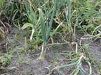
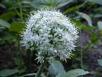
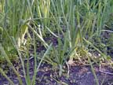
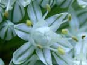
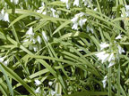

Onion
Allium cepa
Other names
Description
Biennial with smooth, hollow leaves which are grey green, narrow, slightly indented on one side, and smell of onion when crushed. Height to 30 cm, although may reach 1 m, depending on the variety and the climate. The erect, hollow stems are topped by small white flowers packed together in a dense spherical shape. The bulb is covered in brown skin, with concentric layers of white flesh, with a firm, circular base producing a cluster of fine, straight roots.
Similar plants
Many Allium species are grown in gardens, including garlic, leeks, chives, etc: three cornered garlic (A. triquetrum) is locally abundant in damp, shady places and may be eaten by stock.
Distribution
Vegetable gardens, commonly grown vegetable. Cultivated on a field scale in some places. Also found growing wild in pasture or along riverbanks and in parks. Considerable quantities of onions are either discarded in disposal areas or deliberately fed to livestock and have caused poisoning.
Toxin
Onions contain propyl disulphide, 1-propenyl disulphide and 2-propenyl disulphide, all of which are chemically similar to S-methyl-L cysteine sulphoxide (SMCO), the anaemia inducing agent present in Brassica plants. A variety of related toxins are also present in differing quantities in the various species of Allium. They alter the enzyme glucose 6 phosphate dehydrogenase in the metabolic chain within the erythrocytes, leading to denaturation and precipitation of haemoglobin, which in turn results in the formation of Heinz bodies. Those erythrocytes with are removed by the reticulo endothelial system. If enough are removed, a haemolytic anaemia will develop. n propyldisulphide has been shown to have a goitrogenic effect in experimental animals.
Species affected
Cattle are the most susceptible domestic animal, dogs, and horses are intermediate and sheep and goats are least affected. Cats can be affected similarly to, but less severely than, dogs. It would appear that younger animals are more able to withstand the toxic effects of onions. People, pigs and poultry have also been poisoned. Cooking does not affect toxicity, but may make onions more palatable. A dairy cow has been poisoned by 7kg of onions per day.
Clinical signs acute
Clinical signs range from acute to chronic. Haemoglobinuria, anaemia and icterus are constant signs of this poisoning, and most cases are characterised by a strong onion odour on the breath, excrement, milk and flesh. Diarrhoea, loss of appetite (however, in one study, animals retained their appetite until they became very anaemic), depression, cessation of rumination, defaecation and urination, subnormal body temperature, tachycardia, pale conjunctiva, blood stained urine, muscle tremors, paralysis, ataxia, collapse (especially following exercise), and sudden death have all been reported. The severity of the anaemia appears to be related to the proportion of onions in the diet, and may be worsened by concurrent haemologic stresses such as repeated blood sampling or heavy parasite burdens. Studies have shown no apparent effect on foetal development. Apparently healthy cattle may display clinical signs of onion toxicity up to 10 - 14 days after removal from onions.
Clinical signs chronic
Post mortem signs
Jaundice of mucous membranes, subcutaneous tissues and muscles, inflammation of the digestive tract, dark or blood stained urine, dark, swollen kidneys and fatty degeneration of the liver, which is usually pale brown, swollen and necrotic. Tissues smell of onion and many pieces of onion may be present in the rumen/stomach. Histopathology will reveal haemosiderin in the liver and kidney.
Diagnosis
Clinical signs with or without history. Haematology (eg: decreased haemoglobin and PCV, increased leucocyte number) including the presence of Heinz bodies in erythrocytes. Resolution of clinical signs following removal of onions from the diet may assist in a retrospective diagnosis.
Differential diagnosis
Similar to that of toxicity induced by S methylcysteine sulphoxide (a rare toxic amino acid in Brassica species) in livestock. Other toxicities, for example, heavy metals and prussic acid, may result in similar clinical signs. In one case, a puppy was originally misdiagnosed as having epilepsy with a possible heart condition.
Treatment
Remove animals from source and prevent future access to onions. Symptomatic and supportive care is beneficial, provided it can be administered without excitement, as sudden death may occur with restraint. Blood transfusion resulted in immediate improvement in one group of cattle.
Prognosis
Death can occur if left untreated. The anaemia is reversible and is likely to resolve provided the animals are removed from the source.
Prevention
Do not feed onions to pets or livestock unless they have been gradually introduced and have access to other feed.
References
Conner H.E. The Poisonous Plants In New Zealand. 1992. GP Publications Ltd, Wellington
Cooper M R, Johnson A W. Poisonous Plants and Fungi in Britan: Animals and Human Poisoning. Her Majesty’s Stationary Office. London. 1998
Parton K, Bruere A.N. and Chambers J.P. Veterinary Clinical Toxicology, 2nd ed. 2001. Veterinary Continuing Education Publication No. 208
Carbery, J.T. (1999). A case of onion poisoning in a cow. N Z vet J. 47, 184.
Parton, K. 2000. Onion toxicity in farmed animals. N Z vet J. 48:89.
Smith, C.H. and Ellison, R.S. (1986). Concurrent onion poisoning and haematuria in a dog. N Z vet J. 34:77 78.
Surveillance (1978) 5(3): 17 Suspected onion poisoning (pigs).
Surveillance (1993) 20(3):28 Onion poisoning in cattle.
Surveillance (1995) 22(3): 37 Onion poisoning in cattle.
Surveillance (1999) 26(3): 17 Onion poisoning in cattle.
Surveillance 2005, 32(3) , 16
|  plant |
 |
|
|
 |
 |
|
|
|
||
|
 |
|
|